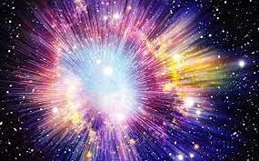

|

Büyük Patlama (Big Bang) Teorisi
Büyük Patlama (Big Bang) Teorisi, evrenin yaklaşık 13,8 milyar yıl önce son derece yoğun, sıcak ve küçük bir
noktadan genişleyerek oluştuğunu açıklayan bilimsel teoridir. Bu teoriye göre evren bir patlamayla değil, ani bir genişleme ile başlamıştır.
Başlangıçta tüm madde, enerji, uzay ve zaman tek bir noktada —sonsuz yoğunlukta bir “tekillikte”— toplanmıştı. Ardından bu nokta
hızla genişlemeye başladı ve zamanla evrenin bugünkü haline gelmesine yol açtı. Evren genişledikçe soğudu; ilk olarak atom altı parçacıklar,
sonra atomlar, ardından yıldızlar ve galaksiler oluştu.
Bu teori, birçok gözlemsel kanıtla desteklenmektedir. En güçlü kanıtlardan biri, 1929’da Edwin Hubble tarafından keşfedilen evrenin genişlemesi olgusudur.
Uzak galaksilerden gelen ışığın “kırmızıya kayması”, onların bizden uzaklaştığını gösterir. Bir diğer kanıt ise kozmik mikrodalga arka plan
ışımasıdır — bu, Büyük Patlama’dan arta kalan zayıf ama evrenin her yerine dağılmış bir radyasyon kalıntısıdır.
Büyük Patlama Teorisi, evrenin geçmişini anlamamıza olanak tanırken aynı zamanda geleceği hakkında da ipuçları verir. Genişleme hızının değişimine
göre evrenin sonsuza kadar genişleyip soğuyacağı veya bir gün tekrar büzülerek “Büyük Çöküş (Big Crunch)” yaşayacağı düşünülür.
Sonuç olarak, Büyük Patlama Teorisi evrenin başlangıcını, yapısını ve evrimini açıklayan en kabul gören kozmolojik modeldir. Evrenin nasıl var olduğu
sorusuna bilimsel açıdan en mantıklı yanıtı sunar.
|